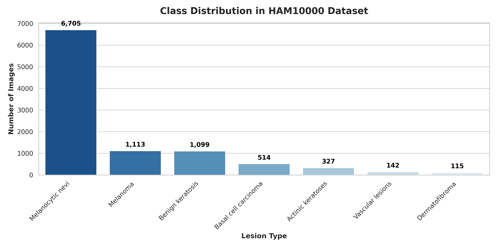
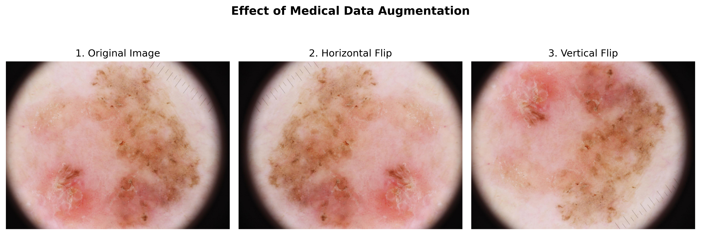
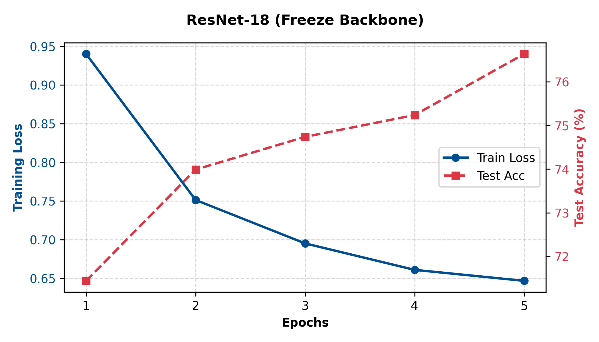
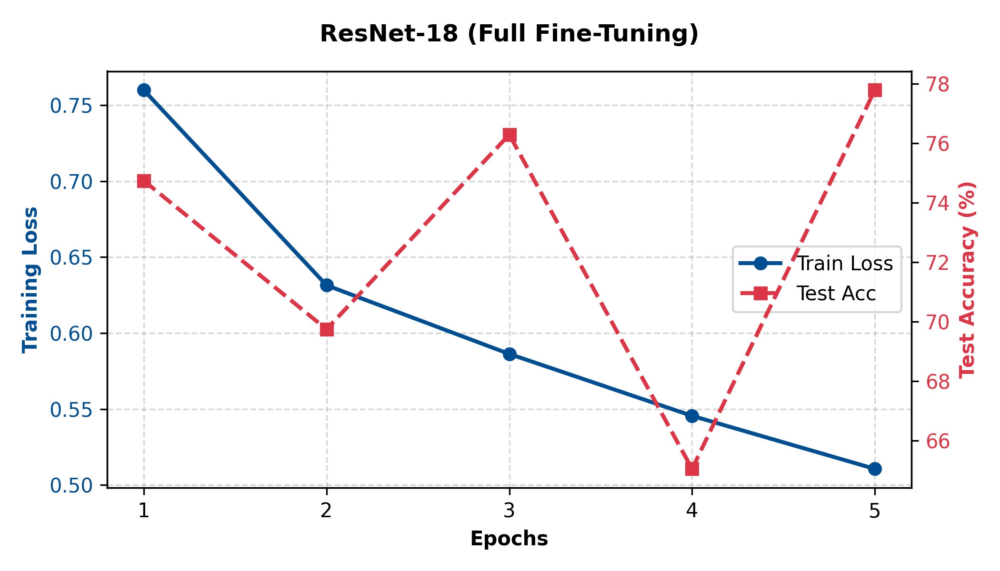
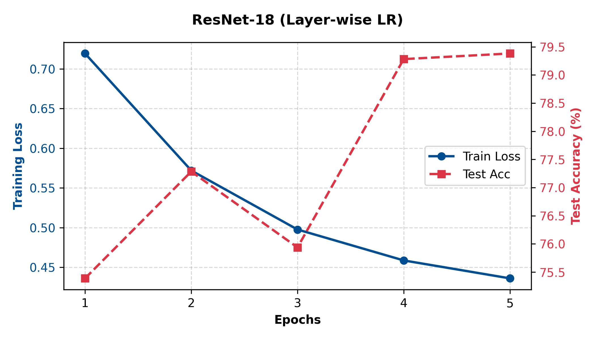
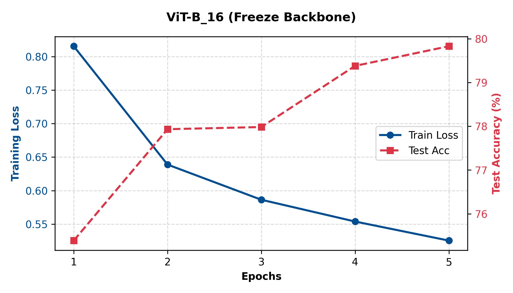
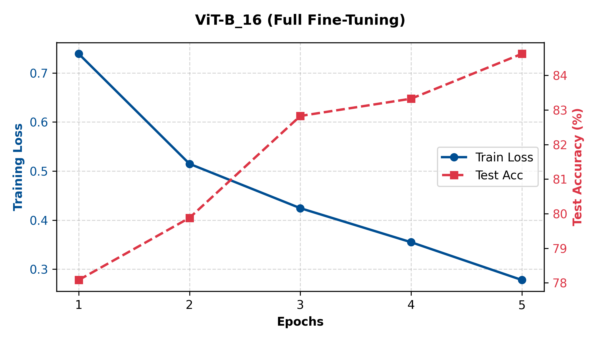
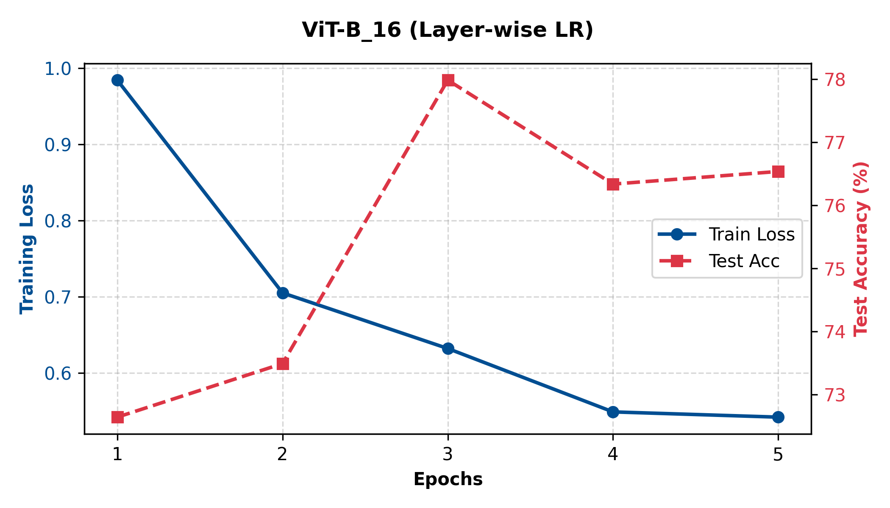
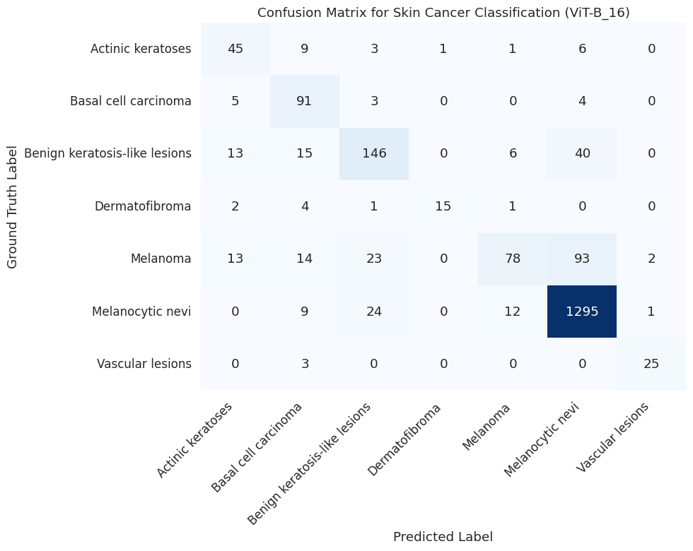
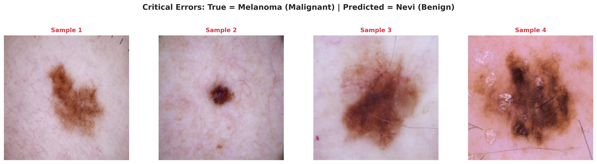

1. Exploratory Data Analysis (EDA)
1.1 Dataset Overview
The HAM10000 ("Human Against Machine with 10000 training images") dataset is a large collection of multi-source dermatoscopic images of common pigmented skin lesions. (Dataset source: Kaggle - Skin Cancer MNIST: HAM10000)
- Total Samples: 10,015 images.
- Original Resolution: 600x450 pixels (RGB).
- Data Split: Stratified split of 80% Training (8,012 images) and 20% Testing (2,003 images) to maintain class proportions.
- Target Classes (7 distinct types):
akiec: Actinic keratoses (Pre-cancerous)bcc: Basal cell carcinoma (Cancerous)bkl: Benign keratosis-like lesions (Benign)df: Dermatofibroma (Benign)nv: Melanocytic nevi (Benign)mel: Melanoma (Cancerous - Highly malignant)vasc: Vascular lesions (Benign)
1.2 Visual Samples
Below are representative images from the dataset, illustrating the visual complexity and high similarity between different lesion types (e.g., distinguishing a benign nevus from an early-stage melanoma is visually challenging).

Figure 1.1: Random samples of skin lesions from the HAM10000 dataset.
1.3 Class Distribution & Imbalance
An initial analysis of the target labels reveals the natural distribution of clinical skin cancer cases. The dataset is heavily skewed towards benign lesions.

Figure 1.2: Bar chart showing the number of samples per class in the HAM10000 dataset.
- Severe Imbalance: The majority class (Melanocytic nevi -
nv) contains over 6,700 samples, while the minority class (Dermatofibroma -df) has only 115 samples. The imbalance ratio is roughly 58:1. - Risk of Bias: Deep learning models are prone to bias towards the majority class. If untreated, the model might achieve high overall accuracy simply by predicting "Benign nevi" for every image, while dangerously misclassifying malignant melanomas.
2. Proposed Preprocessing Pipeline
To prepare the high-resolution medical images for deep learning models, we implemented a customized pipeline via PyTorch's DataLoader:
- Resolution Standardization: All images were resized from 600x450 to 224x224 to match the input specifications of pre-trained ResNet and ViT architectures.
- Medical Data Augmentation: Unlike standard objects (e.g., cars or animals), skin lesions have no fixed top/bottom orientation. Therefore, we applied both
RandomHorizontalFlipandRandomVerticalFlipto artificially multiply the training set while preserving biological validity. - Normalization: Applied ImageNet standard mean
[0.485, 0.456, 0.406]and standard deviation[0.229, 0.224, 0.225]to stabilize gradient descent.

Figure 2.1: Demonstration of spatial augmentation techniques applied to a lesion image.
3. Model Architecture & Training Strategies
We conducted a comparative study between a Convolutional Neural Network (ResNet-18) and a Vision Transformer (ViT-B_16). For both architectures, the final classification head was modified to output 7 classes corresponding to the HAM10000 dataset.
Three Fine-Tuning Strategies Tested:
- Freeze Backbone: Only the newly initialized classification head is trained. The pre-trained feature extractor remains completely frozen. This strategy is computationally cheap but limits domain adaptation.
- Full Fine-Tuning: All layers of the network are unfrozen and updated concurrently using a very small learning rate. This allows the model to deeply learn medical-specific features but requires significantly more computational time.
- Layer-wise Learning Rate Decay: An automated strategy where the learning rate decreases exponentially from the top classification head down to the input layers. Using a geometric decay factor (e.g., 0.85), earlier layers receive progressively smaller learning rates to preserve pre-trained knowledge, while deeper layers adapt aggressively.
All experiments were executed for 5 epochs utilizing a Tesla T4 GPU. Below are the comparative results:
| Model | Strategy | Time / Epoch | Total Time | Test Accuracy |
|---|---|---|---|---|
| ResNet-18 | Freeze Backbone | ~1.3 min | 6.50 min | 76.64% |
| ResNet-18 | Full Fine-Tuning | ~1.4 min | 7.10 min | 77.78% |
| ResNet-18 | Layer-wise Learning Rate | ~1.4 min | 6.94 min | 79.38% |
| ViT-B_16 | Freeze Backbone | ~2.0 min | 10.34 min | 79.83% |
| ViT-B_16 | Full Fine-Tuning | ~5.4 min | 26.98 min | 84.62% |
| ViT-B_16 | Layer-wise Learning Rate | ~5.9 min | 29.56 min | 76.54% |
Table 3.1: Performance comparison across models and fine-tuning strategies.
Key Takeaways:
- CNN vs. Transformer: The Vision Transformer (ViT-B_16) outperformed the Convolutional model (ResNet-18) in peak accuracy (84.62% vs 77.78%). However, the Vision Transformer requires nearly four times longer to train per epoch.
- The Necessity of Full Fine-Tuning: For both architectures, Full Fine-Tuning yielded better results than Freeze Backbone. Unfreezing all layers is critical to adapt pre-trained natural image features to unique medical textures.
- The Layer-wise Learning Rate Decay Paradox: This automated decay strategy yielded contrasting results. For ResNet-18, it improved accuracy to 79.38% by preserving early edge detectors. Conversely, ViT-B_16's accuracy dropped to 76.54%. This suggests the Vision Transformer's self-attention mechanism requires uniform, network-wide updates (Full Fine-Tuning) to fully adapt to dermatoscopic lesions.
4. Model Evaluation
4.1 Training Convergence (All Strategies)
To comprehensively evaluate the learning process, the training loss and testing accuracy over 5 epochs for all four configurations are visualized below:






- Capacity to Learn: Both Full Fine-Tuning and LLRD configurations achieve much lower training losses compared to their Freeze Backbone counterparts. This proves that unfreezing deeper weights is essential for recognizing unique medical textures.
- Architecture Curves (CNN vs. ViT): Under Full Fine-Tuning, ResNet-18 converges quickly but plateaus early. ViT-B_16, however, shows a continuous upward trajectory, fully utilizing its self-attention mechanism by Epoch 3 to surpass the CNN.
- The LLRD Instability: The graphs visually expose the LLRD paradox. While ResNet-18 maintains a stable, climbing accuracy with layer-wise decay, ViT-B_16's test accuracy fluctuates wildly (peaking at Epoch 3 and dropping sharply by Epoch 4). This visually confirms that constraining the learning rate in early Transformer blocks disrupts the global alignment needed for the self-attention mechanism to stabilize.
4.2 Evaluation Metrics Comparison
Due to the severe class imbalance in the HAM10000 dataset, relying solely on Accuracy is insufficient. We report the weighted Precision, Recall, and F1-Score to ensure a fair assessment across all models.
| MODEL | PRECISION ↑ | RECALL ↑ | F1-SCORE ↑ | ACCURACY ↑ | TOP-5 ACCURACY ↑ |
|---|---|---|---|---|---|
| ResNet-18 (Freeze Backbone) | 75.20 | 76.64 | 75.44 | 76.64 | 99.30 |
| ResNet-18 (Full Fine-Tuning) | 77.79 | 77.78 | 75.96 | 77.78 | 99.45 |
| ResNet-18 (Layer-wise Learning Rate) | 78.23 | 79.38 | 78.21 | 79.38 | 99.55 |
| ViT-B_16 (Freeze Backbone) | 78.73 | 79.83 | 79.08 | 79.83 | 99.75 |
| ViT-B_16 (Full Fine-Tuning) | 84.60 | 84.62 | 83.39 | 84.62 | 99.70 |
| ViT-B_16 (Layer-wise Learning Rate) | 82.56 | 76.54 | 77.99 | 76.54 | 99.70 |
Table 4.1: Comprehensive evaluation metrics. Best results are highlighted in green.
- The Accuracy vs. F1-Score Gap: Across all models, the F1-Score is noticeably lower than the overall Accuracy (e.g., 83.39% vs 84.62% for ViT-B_16 Full Fine-Tuning). This reflects the dataset's severe imbalance; the models perform exceptionally well on the majority class (Nevi) but struggle slightly with minority classes, which drags down the weighted F1-Score.
- Clinical Potential (Top-5 Accuracy): Remarkably, all models achieve nearly 100% Top-5 Accuracy. In a clinical setting, this means the true disease is almost guaranteed to be within the model's top 5 predictions. Therefore, the AI can serve as a highly effective diagnostic support tool, helping dermatologists safely narrow down possibilities and significantly reducing the risk of missed diagnoses.
- LLRD's Impact on F1-Score: For ResNet-18, the Layer-wise LR strategy not only improved overall accuracy but also provided a noticeable boost to the F1-Score (from 75.96% to 78.21%), indicating a more balanced recognition of minority classes. Conversely, ViT-B_16 saw a drop in both Accuracy and F1-Score, reinforcing that its self-attention blocks need uniform unfreezing to properly capture minority class features.
5. Error Analysis & Clinical Limitations
To fulfill the extension requirement and deeply understand the model's behavior beyond aggregate metrics, we performed an error analysis on the best model (ViT-B_16 Full Fine-Tuning). We focus on categorizing misclassifications and analyzing the clinical risks associated with the dataset's severe imbalance.
5.1 Confusion Matrix Analysis
The confusion matrix below illustrates the exact distribution of the model's predictions across all 7 classes on the test set.

Figure 5.1: Confusion Matrix of ViT-B_16 (Full Fine-Tuning) on the HAM10000 Test Set.
While the overall accuracy is high (~84.6%), the confusion matrix exposes a dangerous bias towards the majority class (Melanocytic nevi - nv). Because nv makes up 67% of the training data, the model heavily favors predicting nv when uncertain.
The False Negative Danger: The most critical error occurs when the model misclassifies a highly malignant Melanoma (mel) as a benign nevus (nv). In a real-world clinical setting, a False Negative for Melanoma could lead to a delayed cancer diagnosis, which is potentially fatal.
5.2 Categorizing Hard Examples
Based on the confusion patterns, the model's errors generally fall into two categories:
- Inter-class Visual Similarity: Early-stage melanomas and atypical nevi share near-identical visual features (asymmetric shapes, irregular borders, and varied coloration). Without temporal data (how the lesion changes over time) or 3D depth, even experienced dermatologists struggle to distinguish them solely from 2D dermoscopic images.
-
Data Starvation: Minority classes like Dermatofibroma (
df) and Vascular lesions (vasc) have very few training samples. Consequently, the model fails to learn robust feature representations for these classes, often confusing them with the dominantnvclass.
5.3 Illustrating Misclassified Cases
To visually demonstrate the "Inter-class Visual Similarity" issue mentioned above, below are actual samples from the test set where the model confidently made critical False Negative errors (predicting benign Nevi instead of malignant Melanoma).

Figure 5.2: Examples of False Negatives. True Label: Melanoma (Malignant) | Predicted: Nevi (Benign).
Brief Explanation: To the naked eye (and to the model), these malignant melanomas possess the smooth borders and uniform coloring typically associated with harmless nevi. This visual overlap forces the model to rely on its training prior (guessing 'nv' because it's statistically most likely), leading to the misclassification.